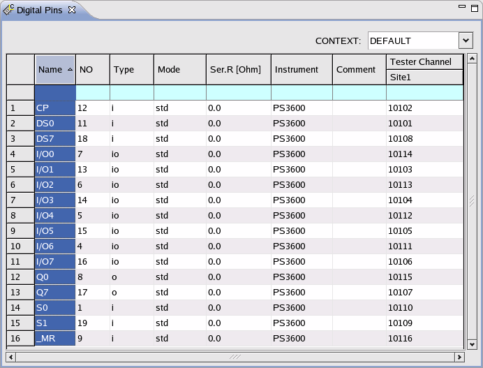
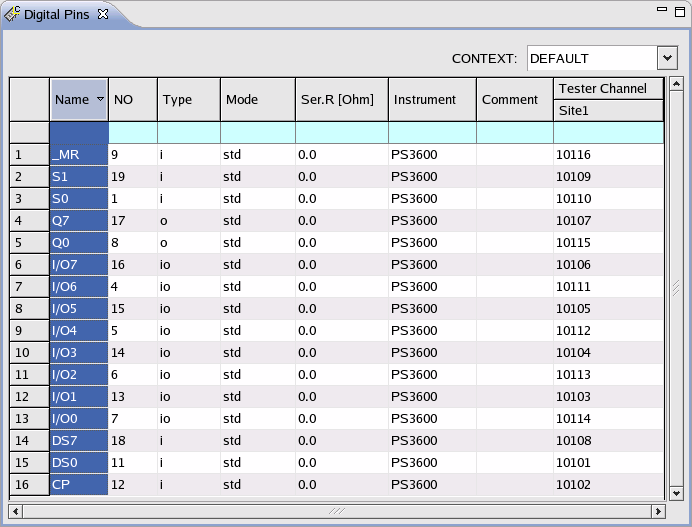

Sorting rows
The rows of the Pin Setting, Group and Port Editor can be sorted by clicking a column header.
Example
The following examples sort the Pin Name column in ascending and descending order.


Functional changes
- Introduced before SmarTest 6.3.2